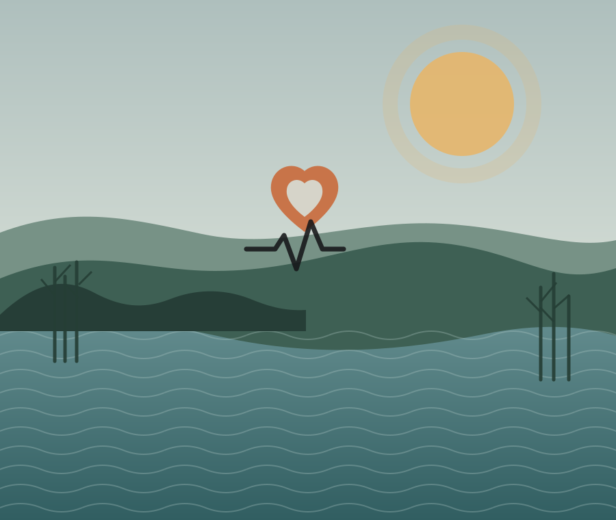

Lân foar ynstelling
Wetter, stien, beam, terp en haard binne it begjinpunt — gjin sintraal gesach.
In digitaal hof · Fryslân
Frysk Hearren is in rêstige, lânwoartele boarne foar in persoanlike wei mei wetter, stien, beam, grûn en it ûndersyksspoar dêrûnder.

Hjir is gjin sintraal gebou. Hillige romte begjint by in boarne, in stien, in beam, in terp of in haard. De taak is omtinken te jaan, it bewiis sichtber te hâlden en it lân de mjitte sette te litten.
It thúsplak
In eigen sal kin boud wurde om in wetterplak, in stien, in beam of in haard hinne. It is in moderne rekonstruksje, basearre op âldere kategoryen fan hillige plakken.
Privacygrins. In persoanlik hillich plak hoecht net op in kaart, mei in adres of iepenbier te wêzen.
Allinne foar dy
Bewarje in namme en in koarte notysje foar dyn eigen sal, haard of plak yn it lân. Dit wurdt nea publisearre.
Dizze side freget net om in adres of koördinaten. Watst hjir skriuwst, bliuwt allinne yn de lokale browseropslach fan dit apparaat. Der wurdt neat nei in tsjinner stjoerd.
Utgongspunten
Wetter, stien, beam, terp en haard binne it begjinpunt — gjin sintraal gesach.
Argeology en iere tsjûgenis hawwe foarrang op letter ferhaal.
Befêstige, ôflate, folksferhaal en rekonstruearre bliuwe dúdlik ûnderskieden.
Loft en lokale omstannichheden telle mear as oerurven datums.
It taheaksel
Elke yngong lit sjen watfoar soarte fan bewearing it is. Dy labels binne de noarm dêr’t dit projekt himsels oan hâldt.
c. 1800 BCE–400 CE
Fynsten yn sompen, poelen en kustwetter, mei ritueel bewiis út terpen, foarmje de âldste nammeleaze laach.
BefêstigeAD 28
Tacitus neamt in hillich wâld fan Baduhenna. De lokaasje is net wis bekend.
Ôflate1e ieu CE
It hillichdom fan Fosite op Helgolân en de wijstien foar Hludana bewarje seldsume neamde punten yn it boarnemateriaal.
Befêstige8e ieu
De Indiculus ferbiedt riten by wâlden, stiennen, boarnen en it wriuwingsfjoer.
Befêstige17e–19e ieu
Folksferhalen en kristlike feestdagen kinne âldere patroanen bewarje as se mei earder bewiis oerlaapje.
FolksferhaalHjoed
Moderne praktyk kin nuttich wêze, mar mei nea as oerurven wissichheid presintearre wurde.
Moderne rekonstruksjeJildichheidsljedder
Register fan hillige plakken
Lokaasjes mei ‘ôflate’ binne wittenskiplike foarstellen, gjin befêstige plakken. Persoanlike plakken hearre net yn dit register.
It wichtichste hillichdom fan Fosite; lettere boarnen neame in beskerme boarne en keppels.
BefêstigeFynplak fan in wijstien foar Hludana.
BefêstigeIn terp mei folle argeologysk bewiis foar in bysûndere omgong mei de deaden.
BefêstigeIn boarne mei in letter kristlik ferhaal; de foar-kristlike oerlaach is in folksferhaal-ynterpretaasje.
FolksferhaalIen foarstelde lokaasje foar it wâld fan Baduhenna.
ÔflateIn libbene beuk mei in lange lokale betsjutting.
FolksferhaalDe wei
Wijd dyn eigen plak yn, meitsje in haard en begjin mei ienfâldige offers.
Besykje in beskreaun plak. Bou de iepenbiere kaart en keppelje de webûnderfining oan Kairos.
Untwikkelje ûndersyksartikels en in jierpraktyk mei sichtbere bewiislabels.
Wês iepen as paden inoar kruse; bied in kontaktpunt sûnder wervingsmasinery.
Tiid troch waarnimming
Frysk Hearren brûkt de webûnderfining fan Kairos as in finster op sinnestiid en de libbene loft. De watch, CLI en Linux-paden bliuwe selsstannich en ûnferoare.